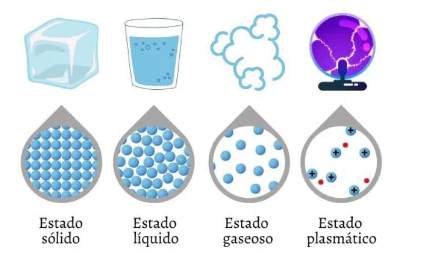
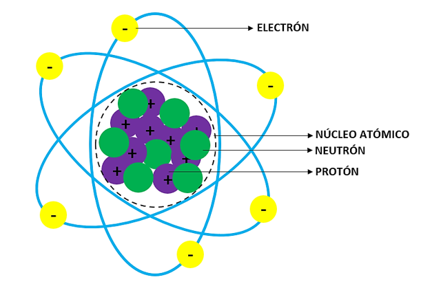

Proyecto de Química
Historia de la Tabla Periódica
La tabla periódica fue diseñada por el químico ruso Dmitri Mendeléiev en 1869 y contenía 63 de los 118 elementos conocidos hoy en la naturaleza. Es un cuadro que presenta todos los elementos químicos que existen ordenados según sus propiedades físicas. Es considerado por muchos como el descubrimiento más importante de la química.
Antes de este hito, los químicos no se ponían de acuerdo sobre cómo nombrar y ordenar los elementos. En 1860 se organizó el primer Congreso Internacional de Químicos en Alemania, donde se gestó la manera actual de organizar los elementos.
Actualmente la tabla periódica actual cuenta con 118 elementos (94 de los cuales se dan de manera natural en la Tierra) sin embargo, los cintificos estan intentando sinttizar nuevos elementos artificiales, por lo que no se descarta que esta lista aumente en el futuro.
¿Cómo se organizala tabla periódica?
La tabla periódica de los elementos está organizada de menor a mayor según su número atómico, es decir, el número total de protones que tiene cadad átomo de ese elemento. Además están distribuidos en 7 filas horizontales llamadas periodos y 18 columnas verticales conocidas como grupos, de modod que los elementos que pertenecen al mismo grupo tienen propiedades similares
Grupos de la tabla periodica
Las 18 columnas verticales conforman los conocidos como grupos de la tabla periodica y son elementos que tienden a tener propiedades quimicas similares. por ejemplo, la columna más a la izquierda de la tabla, la conocida como el grupo de los metales alcalinos, contiene elementos como el sodio, el potasio o el litio, todos ellos sólidos a temperatura ambiente, con puntos de fusion bajos, muy reactivos y con tendencia a ennergrecerse en contacto con el aire.
Clasificación según las propiedades
En estas encontramos metales, no metales y metaloides, los beneficios de la tabla periodica son:
Encontrar facilmente elementos, ayuda a proveer reactividad, sirve de base para la química.
En la tabla periódica encontramos los 108 elementos, cada uno incluye datos como simbolo,nombre,numer atomico y masa.
Clasificación de los elementos de la tabla periódica
- Grupo 1: Metales Alcalinos
- Grupo 2: Metales Alcalinotérreos
- Grupo 3: Familia del Escandio
- Grupo 4: Familia del Titanio
- Grupo 5: Familia del Vanadio
- Grupo 6: Familia del Cromo
- Grupo 7: Familia del Manganeso
- Grupo 8: Familia del Hierro
- Grupo 9: Familia del Cobalto
- Grupo 10: Familia del Níquel
- Grupo 11: Familia del Cobre
- Grupo 12: Familia del Zinc
- Grupo 13: Térreos
- Grupo 14: Carbono
- Grupo 15: Nitrogenoides
- Grupo 16: Calcógenos
- Grupo 17: Halógenos
- Grupo 18: Gases Inertes
Configuración Electrónica
La configuración electrónica es una configuración propia para cada elemento, explica cómo los electrones se distribuyen en los diversos orbitales y niveles de un átomo, también nos proporciona información acerca del período, grupo y familia a la que pertenecen, número atómico y electrones disponibles para unir, que son los electrones de valencia. El llenado de los orbitales inicia del subnivel más bajo de energía (Principio de AUF-BAU). Existen cuatro subniveles de energía: s (máx. 2 electrones), p (6), d (10) y f (14). Hay 7 períodos, lo que nos permite comprender las reglas de las diagonales, que nos señala la secuencia para el orden de llenado o acomodo de los electrones.
Reglas de configuración de los electrones
Existen reglas especificas que guían la distribución de los electrones en los orbitales:
Regla de Aufbau (Principio de construcción): Establece que los electrones llenan primero los orbitales de menor energia antes de pasar a los de mayor energia. En la practica, esto significa que los electrones se distribuyen en los orbitales en un orden especifico: 1s, 2s, 2p, 3s, 3p, 4s, 3d, 4d y asi sucesivamente.
Principio de exclusión de Pauli: Cada orbital puede contener como maximo dos electrones, y estos deben tener espines opuestos. El espin es una propiedad cuántica de los electrones y puede tener dos valores posibles, generalmente representados como +½ y -½.
Regla de Hund (Regla de maxima multiplicidad):Establece que los electrones se distribuyen de manera uniforme entre los orbitales de un subnivel antes de que dos electrones ocupen el mismo orbital. Esta distribución maximiza la repulsión entre electrones, lo que a su vez maximiza la estabilidad del átomo.
Niveles de energía
Los electrones se encuentran en niveles de energía alrededor del núcleo, numerados del 1 al 7, donde el nivel 1 es el más cercano al núcleo y tiene menor energía.
Subniveles de energía
Dentro de cada nivel, existen subniveles (s, p, d, f) con diferentes formas y capacidades.
- Subnivel s: Máx. 2 electrones
- Subnivel p: Máx. 6 electrones
- Subnivel d: Máx. 10 electrones
- Subnivel f: Máx. 14 electrones

Los Iones y Cationes
¿Qué es un anión?
Los aniones son iones cargados negativamente
¿Qué es un catión?
Los cationes son iones cargados positivamente
Se forman cuando un metal pierde electrones, y los no metales ganan esos electrones. La atracción electrostática entre positivos y negativos atrae las partículas entre sí y crea un compuesto iónico, por ejemplo el cloruro de sodio. Por otro lado, un metal reacciona con un no metal para formar un enlace iónico. A menudo se puede determinar la carga por un ion que normalmente ha tenido por la posición del elemento en la tabla periódica:
• Los metales alcalinos (los elementos IA) pierden un electrón para formar un catión con una carga 1+.
• Los metales alcalinos de la tierra (los elementos IIA) pierden dos electrones para formar un catión 2+.
• El aluminio, un miembro de la familia IIIA, pierde tres electrones para formar un catión 3+.
• Los halógenos (elementos VIIA) tienen siete electrones de valencia. Todos los halógenos ganan un electrón para llenar su nivel de energía de valencia. Y todos ellos forman un anión con una sola carga negativa.
• Los elementos VIA ganan dos electrones para formar aniones con una carga 2-.
• Los elementos VA ganan tres electrones para formar aniones con una carga de 3-.
La Materia y sus Estados
Los estados de la materia son las distintas fases o estados de agregación en los que puede encontrarse la materia conocida, sean sustancias puras o mezclas. El estado de agregación de una sustancia depende del tipo y de la intensidad de las fuerzas de unión que existan entre sus partículas (átomos, moléculas, iones, etc). Otros factores que influyen en el estado de agregación son la temperatura y la presión.
Cada uno de esstos estados posee caracteristicas fisicas especificas, como volumen, fluidez, resistencia, etc., que los distinguen entre sí.
Asimismo, existen otras formas que no se producen en nuestro entorno naturalmente, como los condensados fermiónicos.
Estado Solido
Los sólidos tienen baja o nula fluidez y no pueden comprimirse. La materia en estado sólido tiene sus partículas muy juntas, unidas por fuerzas de atracción de gran magnitud. Debido a esto, los sólidos tienen forma definida, alta cohesión, elevada densidad y gran resistencia a la fragmentación. A la vez, los sólidos tienen baja o nula fluidez, no pueden comprimirse, y cuando se los rompe o fragmenta, se obtiene de ellos otros sólidos más pequeños. Existen dos tipos de sólidos, de acuerdo a su forma:
Cristalinos
Sus partículas se ordenan en celdas de forma geométrica, por eso suelen tener forma regular y bordes definidos. Ejemplo: la sal, el azúcar.
Amorfos o vítreos
Sus partículas no siguen un orden específico, por lo que no presentan forma regular. Ejemplo: vidrio, plástico.
Estado Liquido
El estado líquido es un estado de agregación de la materia intermedio entre el estado sólido y el estado de gas. Las moléculas de los líquidos no están tan próximas como las de los sólidos, pero están menos separadas que las de los gases. Las moléculas en el estado líquido ocupan posiciones al azar que varían con el tiempo. Las distancias íntermoleculares son constantes dentro de un estrecho margen. En algunos líquidos, las moléculas tienen una orientación preferente, lo que hace que el líquido presente propiedades anisótropas (propiedades, como el índice de refracción, que varían según la dirección dentro del material). Los líquidos presentan tensión superficial y capilaridad, generalmente se dilatan cuando se incrementa su temperatura y pierden volumen cuando se enfrían, aunque sometidos a compresión su volumen es muy poco variable a diferencia de lo que sucede con otros fluidos como los gases. Los objetos inmersos en algún líquido están sujetos a un fenómeno conocido como flotabilidad.
Estado Gaseoso
En muchas ocasiones los gases son incoloros y/o inodoros. En el caso de los gases, las partículas se encuentran en un estado de dispersión y de alejamiento tal que apenas logran mantenerse juntas. La fuerza de atracción entre ellas es tan débil que se encuentran en un estado desordenado, que responde muy poco a la gravedad y ocupan un volumen mucho mayor que los líquidos y los sólidos, por lo que un gas tenderá a expandirse hasta ocupar la totalidad del espacio en el que se lo contenga. Los gases no tienen forma fija ni volumen fijo y en muchas ocasiones son incoloros y/o inodoros. En comparación con otros estados de agregación de la materia, son poco reactivos químicamente.
Estado Plasmatico
El plasma es un excelente transmisor de la electricidad y el magnetismo. Se llama plasma a un estado de agregación de la materia particular, que puede comprenderse como un gas ionizado, es decir, compuesto por átomos a los que les han sido retirados o sumado electrones y, por ende, tienen una carga eléctrica fija (aniones (-) y cationes (+). Esto convierte el plasma en un excelente transmisor de la electricidad.
Por otra parte, las partículas plasmáticas interactúan muy fuertemente con los campos electromagnéticos. Debido a que el plasma tiene características propias (que no se corresponden ni con los sólidos, ni con los gases, ni con los líquidos) se dice que es el cuarto estado de la materia. Existen dos tipos de plasmas:

Estructura Atómica
Por mucho tiempo se pensó que el átomo era indivisible, pero las diferentes teorías que se desarrollaron a lo largo de los años dejaron en claro que esto no era así. El átomo se compone de un núcleo, el cual es la parte central, allí se encuentran los protones y los neutrones. Es la parte con mayor masa y posee una densidad.
La corona electrónica es la parte exterior del núcleo en donde se encuentran orbitando los electrones alrededor del centro. Ocupan la mayor parte del volumen del átomo. El diámetro de la corona electrónica siempre es superior al núcleo, aunque el núcleo posee mayor masa. Los electrones y los protones determinan las propiedades químicas de los electrones.
Particulas Subatómicas
Las partículas subatómicas del átomo son los neutrones, protones (partículas nucleares) y electrones. Definamos cada una de ellas.
Electrones
Los electrones se denotan con el símbolo “e-“ su masa es de 9.10938 ×10289.10938 ×1028 g lo que evidencia que es muchísimo más liviano que un protón y la analogía es correcta debido a que los electrones se encuentran girando alrededor del núcleo atómico a grandes velocidades.
La unidad de carga electrónica es −1−1 y un átomo eléctricamente neutro tendrá la misma cantidad de protones y neutrones, como se menciona más adelante.
Cationes
Cuando los átomos pierden electrones se convierten en iones que poseen carga positiva y se denominan cationes.
Amorfos o vítreos
Cuando los átomos ganan electrones, adquieren carga negativa y se convierten en iones llamados aniones.
Particulas Nucleares
Las partículas nucleares son las partículas que se encuentran en el núcleo del átomo y son fundamentales para su estructura y propiedades. Estas incluyen los protones, los neutrones y, en algunos contextos, los electrones, aunque estos últimos se encuentran en la corteza del átomo y no en el núcleo
Protones
Son partículas subatómicas con carga eléctrica positiva. Forman parte del núcleo del átomo y son responsables del número atómico, que determina el elemento químico al que pertenece el átomo. La masa del protón es de 1.67262 ×10−241.67262 ×10−24 g igual a la del átomo de hidrógeno, recordemos que el átomo de H posee un solo protón en el núcleo.
Neutrones
Son partículas subatómicas con carga eléctrica neutra. También forman parte del núcleo del átomo y contribuyen a la masa del átomo. La masa de un neutrón es ligeramente mayor que la del protón. Los neutrones son esenciales para la estabilidad del núcleo atómico, excepto en el caso del isótopo hidrógeno-1, que contiene solo un protón
La suma de los neutrones y los protones presentes en el núcleo de un elemento se denomina número de masa o masa atómica (A) y su valor siempre será un número entero. La regla excluye al hidrógeno, ya que en su núcleo se halla un protón y existe la ausencia de neutrones.
Número de masa = número de protones + número de neutrones
A = Z + N
La Historia Quimica
La historia de la química abarca desde las primeras observaciones de la materia y sus transformaciones hasta el desarrollo de la ciencia moderna. Inicialmente, se mezcló con la filosofía natural, luego evolucionó a través de la alquimia, y finalmente se consolidó como una disciplina científica con el surgimiento de la química moderna, especialmente con los trabajos de Antoine Lavoisier.
Clasificación de los elementos quimicos
Los elementos químicos se pueden clasificar de varias maneras, pero las más comunes son según sus propiedades físicas y químicas y su ubicación en la tabla periódica.
1. Según sus propiedades físicas y químicas
• Metales: Los metales son elementos químicos que, en su mayoría, tienen un aspecto brillante y son buenos conductores de calor y electricidad. Son maleables (pueden hacerse láminas) y dúctiles (pueden hacerse hilos). La mayoría son sólidos a temperatura ambiente, excepto el mercurio.
• No Metales: Los no metales son elementos que no tienen el brillo de los metales y no conducen bien el calor ni la electricidad. Pueden encontrarse en estado sólido, líquido o gaseoso a temperatura ambiente. Son frágiles y no se pueden moldear fácilmente.
• Metaloides o semimetales: Los metaloides son elementos que tienen propiedades intermedias entre los metales y los no metales. Pueden conducir la electricidad, pero no tan bien como los metales. Suelen tener aspecto brillante o semibrillante y son semiconductores, por lo que se usan mucho en la electrónica.
2. Según su ubicación en la tabla periódica
• Grupos o Familias: Los grupos o familias son columnas verticales en la tabla periódica. Los elementos de un mismo grupo tienen propiedades químicas similares porque tienen el mismo número de electrones en su última capa (electrones de valencia).
• Periodos Los periodos son las filas horizontales en la tabla periódica. Los elementos de un mismo periodo tienen el mismo número de capas de electrones, pero diferentes propiedades químicas.
3. Según su abundancia y origen
• Elementos naturales: Son aquellos elementos químicos que existen en la naturaleza y no han sido creados artificialmente por el ser humano. Se encuentran en la Tierra, el aire, el agua y los seres vivos.
• Elementos artificiales: Son elementos que no se encuentran de manera natural en la Tierra, sino que han sido producidos por los científicos en laboratorios mediante reacciones nucleares.
Resumen gráfico: Clasificación de los Elementos Químicos
| Clasificación | Ejemplos |
|---|---|
| Fe, Au, Cu, Ag | |
| O, N, S, Cl | |
| Si, B, Ge | |
| 🟩 Alcalinos | Na, K |
| 🟪 Halógenos | F, Cl, Br |
| 🟦 Gases Nobles | He, Ne, Ar |
| 🍃 Naturales | C, O, Fe |
| 🧪 Artificiales | Es, Md |
Resumen
La química es la ciencia que estudia la materia, su composición, estructura, propiedades y los cambios que experimenta durante las reacciones químicas. Es fundamental para comprender el mundo que nos rodea, ya que todo está compuesto por materia: desde el aire que respiramos, hasta el agua que bebemos y los alimentos que consumimos.